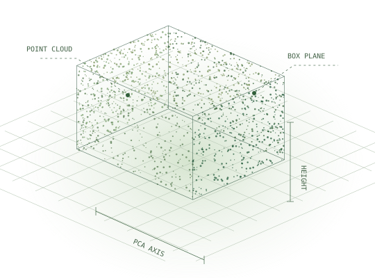

2025.10 — 至今教育
数据科学硕士
Friedrich-Alexander-Universität
Erlangen-Nürnberg
M.Sc. Data Science · Erlangen, Germany
数据科学 · 计算机视觉 · 软件工程
你好，我是 Yingchao Li。FAU 数据科学硕士在读，将计算机视觉、机器学习与软件工程连接起来，让想法在真实场景中运行。

CVKit 几何模块 · 流程示意图
理解原理，也把系统做完整。
01 / 项目精选
全部 GitHub 仓库↗从视觉算法到 Web 应用，再到端侧设备。
这里是我正在构建和探索的作品。
02 / 关于我
A LITTLE CONTEXT我的计算机科学背景，让我关心系统如何运行；数据科学的学习，则让我更深入地理解模型为何有效。我喜欢在两者之间工作——从实验、评估，到界面、API 和硬件集成。
目前在德国 FAU 攻读数据科学硕士，关注计算机视觉、AI 应用与软硬件协同。
Friedrich-Alexander-Universität
Erlangen-Nürnberg
M.Sc. Data Science · Erlangen, Germany
Guanghong · 零售业务
独立开发并部署微信小程序，支持商品浏览、线上下单及 Python 后端，集成 AI 客服并负责测试与维护。
中国地质大学（武汉）
B.Sc. Computer Science and Technology
本科毕业论文 / 2024.12 — 2025.06
设计 PriAda-U-Net 去雾与 GRS-U-Net 去雨模型，将暗通道和梯度图先验融入网络，通过自适应损失加权、对比实验与消融研究评估模型。
01 / AI & VISION
PyTorch · scikit-learn · OpenCV
目标检测 · 图像复原 · 特征提取
02 / SOFTWARE
Python · JavaScript · React · FastAPI
REST · SSE · SQLite · Git · pytest
03 / EMBEDDED
C / C++ · ESP32-S3 · FreeRTOS
摄像头接入 · GPIO · 软硬件集成
中文 / 母语English / 流利Deutsch / 基础